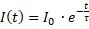
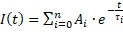

|
理论
|
要理解荧光寿命测量的原理，一些理论基础是有帮助的。
荧光样品可视为单个荧光物体的集合。对此类集合的实验显示出与对单个此类物体进行多次测量相同的特征。
描述这种发射体荧光行为的最简单模型是一个双能级系统：
如果发射体在t = 0时被激发，那么在稍后时间t的荧光强度可以由下式描述：

,其中τ是激发态的特征寿命，I0是常数因子。
如果发射体不仅有一个，而是有n条可能的吸收和随后发射荧光光子的路径，则强度变为：

,其中Ai描述不同路径的相对概率，τi代表不同激发态的特征寿命。
在荧光寿命测量中，确定的是样品发射荧光的这种特征时间行为：